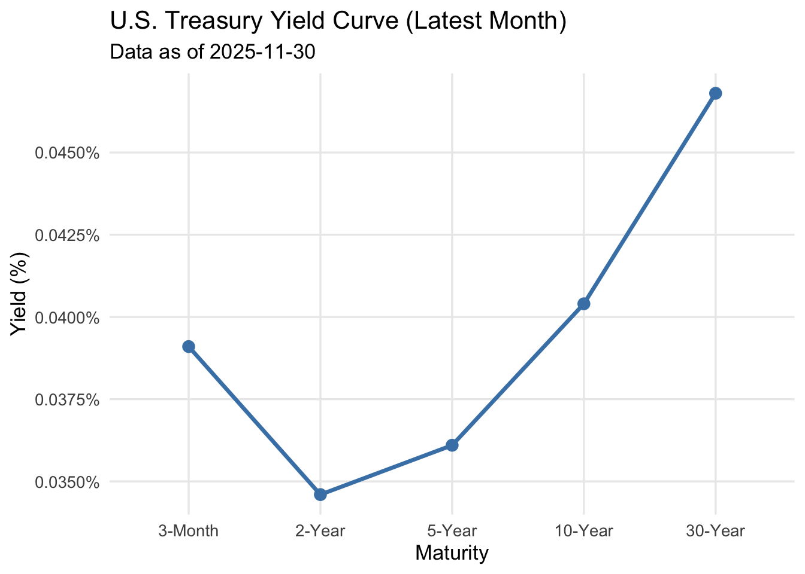

Code
# Load cleaned master dataset
master <- read_csv("data/clean/master_df.csv") |>
clean_names() |>
mutate(date = as.Date(date))
yc <- master |>
select(date, dgs3mo, dgs2, dgs5, dgs10, dgs30)
# Pick the latest available month for snapshot
latest_month <- master |> filter(date == max(date))
yield_snapshot <- latest_month |>
select(dgs3mo, dgs2, dgs5, dgs10, dgs30) |>
pivot_longer(cols = everything(),
names_to = "maturity",
values_to = "yield")
yield_snapshot$maturity <- factor(
yield_snapshot$maturity,
levels = c("dgs3mo", "dgs2", "dgs5", "dgs10", "dgs30"),
labels = c("3-Month", "2-Year", "5-Year", "10-Year", "30-Year")
)
ggplot(yield_snapshot, aes(x = maturity, y = yield)) +
geom_line(group = 1, color = "steelblue", linewidth = 1.2) +
geom_point(color = "steelblue", size = 3) +
labs(
title = "U.S. Treasury Yield Curve (Latest Month)",
subtitle = paste("Data as of", max(master$date)),
x = "Maturity",
y = "Yield (%)"
) +
scale_y_continuous(labels = label_percent(scale = 0.01)) +
theme_minimal(base_size = 13) +
theme(panel.grid.minor = element_blank())